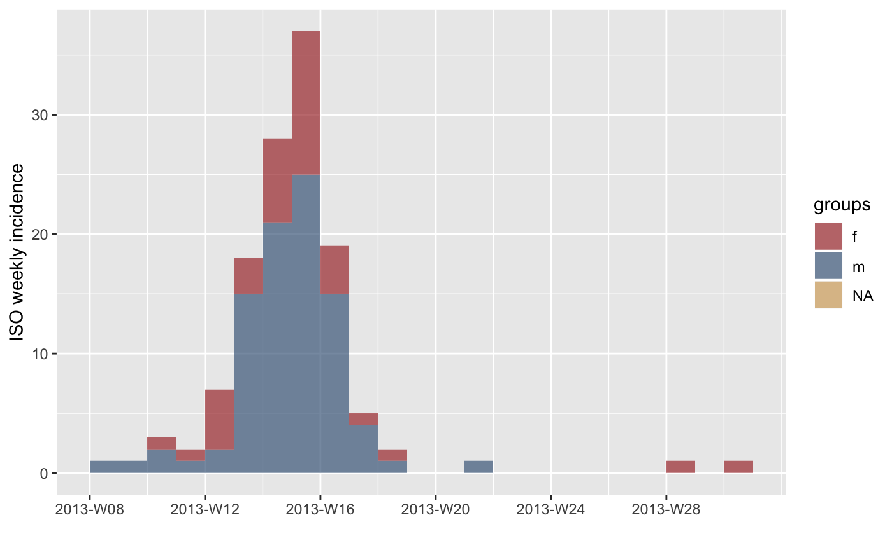
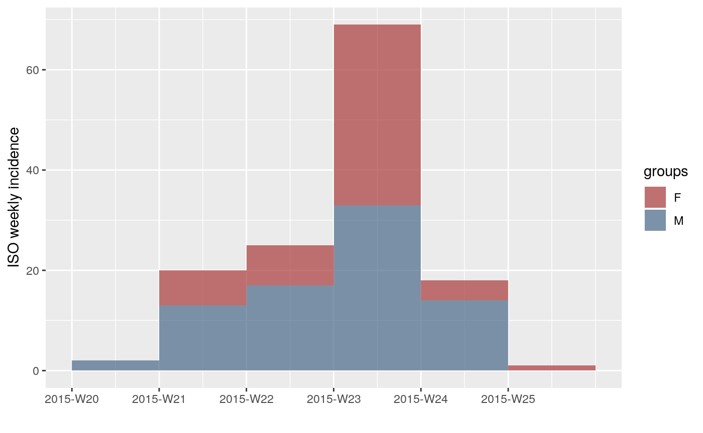

Main visible functions of the package
The main functions of the package include:
-
clean_data()will standardise variable names by removing spaces and extra punctuation, attempt to parse dates with a given tolerance, and convert all characters to the closest ASCII approximation -
as_linelist()will convert a data frame to a linelist object, allowing the user to define a data dictionary. -
epivars()defines valid variables to be used in the data dictionary -
get_var()accesses a variable from the linelist -
set_epivars()adds new dictionary definitions to the linelist
The linelist data class allows you to define variables that are important to your analysis that make it easy to create situation report templates no matter what the data class is.
As an example, we can use data from the outbreaks package.
## linelist is loaded with the following global variables in `epivars()`:
## id, date_onset, date_report, gender, age, age_group, geo# define the important variables
epivars(
"id",
"date_onset",
"gender",
"age",
"outcome",
"date_outcome",
"date_hospitalisation",
set = TRUE)## [1] "id" "date_onset" "date_report"
## [4] "gender" "age" "age_group"
## [7] "geo" "outcome" "date_outcome"
## [10] "date_hospitalisation"# convert the data set to a linelist and define the variables
ll <- as_linelist(outbreaks::fluH7N9_china_2013,
"outcome" = "outcome",
"date_outcome" = "date_of_outcome",
"date_hospitalisation" = "date_of_hospitalisation",
"id" = "case_id",
"date_onset" = "date_of_onset",
"gender" = "gender",
"age" = "age"
)The resulting linelist object acts the same as a data frame in every way, but it contains a data dictionary in the metadata:
# These are the same
head(ll)## case_id date_of_onset date_of_hospitalisation date_of_outcome outcome
## 1 1 2013-02-19 <NA> 2013-03-04 Death
## 2 2 2013-02-27 2013-03-03 2013-03-10 Death
## 3 3 2013-03-09 2013-03-19 2013-04-09 Death
## 4 4 2013-03-19 2013-03-27 <NA> <NA>
## 5 5 2013-03-19 2013-03-30 2013-05-15 Recover
## 6 6 2013-03-21 2013-03-28 2013-04-26 Death
## gender age province
## 1 m 87 Shanghai
## 2 m 27 Shanghai
## 3 f 35 Anhui
## 4 f 45 Jiangsu
## 5 f 48 Jiangsu
## 6 f 32 Jiangsuhead(outbreaks::fluH7N9_china_2013)## case_id date_of_onset date_of_hospitalisation date_of_outcome outcome
## 1 1 2013-02-19 <NA> 2013-03-04 Death
## 2 2 2013-02-27 2013-03-03 2013-03-10 Death
## 3 3 2013-03-09 2013-03-19 2013-04-09 Death
## 4 4 2013-03-19 2013-03-27 <NA> <NA>
## 5 5 2013-03-19 2013-03-30 2013-05-15 Recover
## 6 6 2013-03-21 2013-03-28 2013-04-26 Death
## gender age province
## 1 m 87 Shanghai
## 2 m 27 Shanghai
## 3 f 35 Anhui
## 4 f 45 Jiangsu
## 5 f 48 Jiangsu
## 6 f 32 Jiangsuget_meta(ll)## column epivar class hxl
## 1 case_id id factor
## 2 date_of_onset date_onset Date
## 3 date_of_hospitalisation date_hospitalisation Date
## 4 date_of_outcome date_outcome Date
## 5 outcome outcome factor
## 6 gender gender factor
## 7 age age factor
## 8 province <NA> factorYou can use this data dictionary to access variables:
## [1] m m f f f f
## Levels: f m## [1] Death Death Death <NA> Recover Death
## Levels: Death RecoverThis becomes useful in generating templates where the columns from the incoming data may not be standardised. For example, if you want to generate an incidence curve for the data stratified by gender, you could write something like this:
ic <- incidence(date_onset(ll), interval = "week", groups = gender(ll))## 10 missing observations were removed.plot(ic)
Now, if you had a new data set coming into the template, you are prepared:
old_ll <- ll
ll <- as_linelist(outbreaks::mers_korea_2015$linelist,
"id" = "id",
"age" = "age",
"gender" = "sex",
"date_onset" = "dt_onset"
)
ic <- incidence(date_onset(ll), interval = "week", groups = gender(ll))## 27 missing observations were removed.plot(ic)